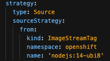
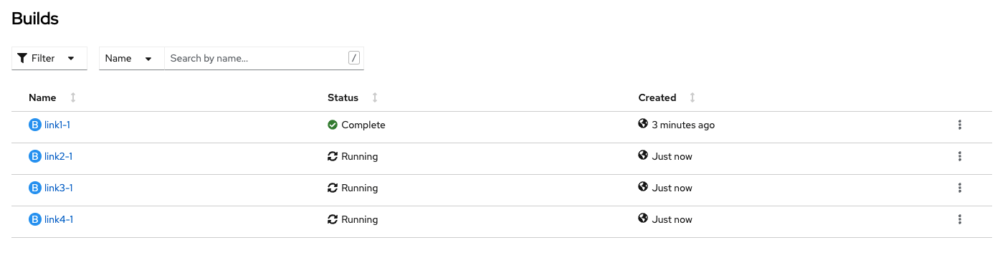
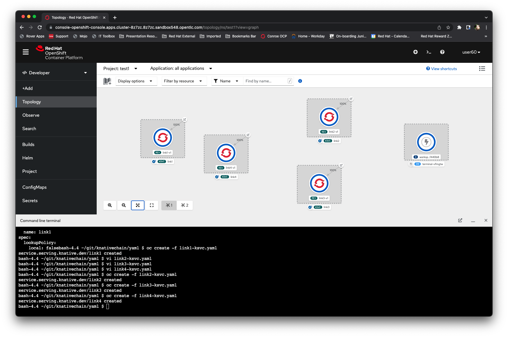
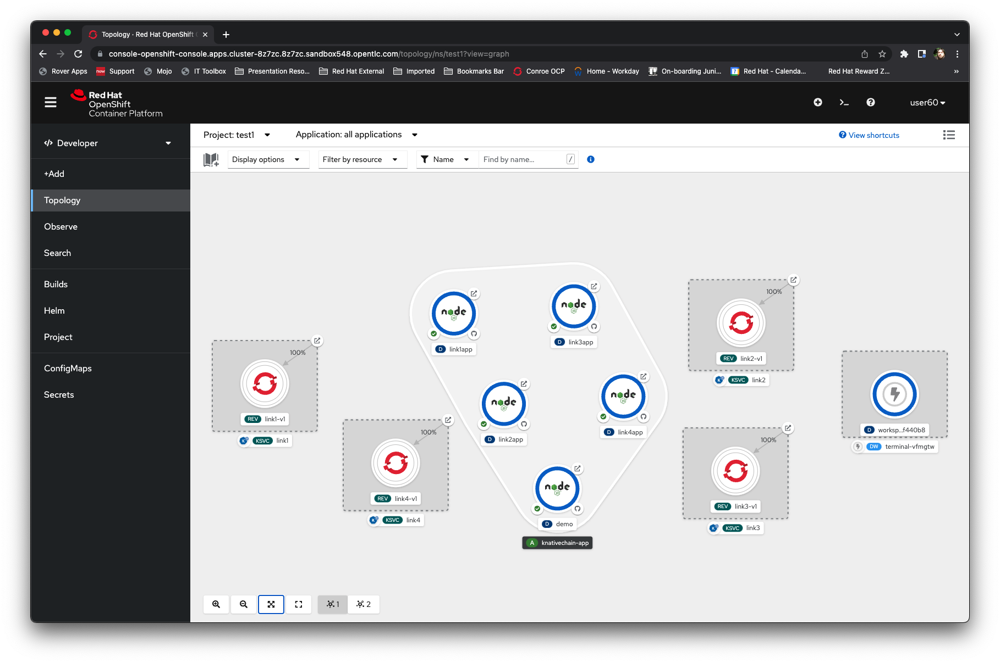
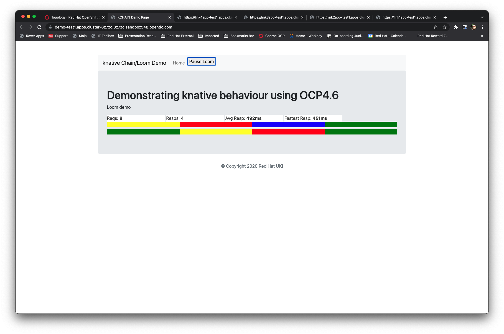

Student Bootcamp - OpenShift Serverless Exercise
This is a fun exercise to test your knowledge of OpenShift from the course and play with the concept of knative Serving. This is a free form exercise that allow you to code changes into the demo you will produce.
Logging on to the system
Go the URL provided for the Cluster.
Your username will be "userX" where X is a number. Your password is
openshift.
Creating a Project/Namespace
Click on the pulldown at the top left of the page (Project: All Projects). Select
Create Project
IMPORTANT - for the name of your project use "chaindemoX" where X is the number of your user. Do
not use X. Click on
Create
Building the demo
The source for the demo is at
https://github.com/utherp0/knativechain
In the Developer Viewpoint select the 'Terminal' icon (top right of the interface).
Create a directory in the Terminal window called 'git'. 'cd' into that directory. Clone the repository above (hint, use 'git clone').
Using the 'yaml' directory create the imagestreams for all four applications. (hint, use 'oc create -f' and the linkx-is.yaml files)
Using the 'yaml' directory create the buildconfigs for all four links.
Note - the buildconfigs make reference to an image that is too old for the build.
Using the Ux edit all four of the buildconfigs and change the source image from 'nodejs:12-ubi7' to 'nodejs14-ubi8'.

Now start all the builds using the Ux (go to the 'Builds' page and choose action on each of the buildconfigs, then 'build'.

Creating the Serverless applications
Now you have to edit the serverless definitions for your project. In the 'yaml' directory of the git repo (in your terminal window) use 'vi' to change the specification for the image to be used to match your project.
For example, for the link1-ksvc.yaml file change the "- image:" url end from '/chaintest/link1' to '/chaindemoX' where X is your number.
When you have correctly edited all four of the '-ksvc.yaml' files, create them using the terminal (hint, 'oc create -f' is your friend).
If all the serverless deployments work you should see a screen similar to this, with four serverless services active (called linkx):

Creating the static applications that consume the Serverless components
Now we are going to create five applications that consume our serverless components. These are static so we can create them from a fixed git repo. They use an ENV variable, which will add after, to tell the apps where to talk to.
For link1 use the '+Add', All Services, search for 'node' and select the 'Node builder image'. Click Create and set the git repo to "https://github.com/utherp0/knativechain".
IMPORTANT. We have one repo and the applications are all in subfolders. Select 'Advanced Git options'. Set the 'Context Dir' to "/apps/link1".
Now change the 'Name' to be 'link1app'. Leave the 'Application Name' as 'knativechain-app'. Hit 'Create'.
For link2 use the '+Add', All Services, search for 'node' and select the 'Node builder image'. Click Create and set the git repo to "https://github.com/utherp0/knativechain".
IMPORTANT. We have one repo and the applications are all in subfolders. Select 'Advanced Git options'. Set the 'Context Dir' to "/apps/link2".
Now change the 'Name' to be 'link2app'. Leave the 'Application Name' as 'knativechain-app'. Hit 'Create'.
For link3 use the '+Add', All Services, search for 'node' and select the 'Node builder image'. Click Create and set the git repo to "https://github.com/utherp0/knativechain".
IMPORTANT. We have one repo and the applications are all in subfolders. Select 'Advanced Git options'. Set the 'Context Dir' to "/apps/link3".
Now change the 'Name' to be 'link3app'. Leave the 'Application Name' as 'knativechain-app'. Hit 'Create'.
For link4 use the '+Add', All Services, search for 'node' and select the 'Node builder image'. Click Create and set the git repo to "https://github.com/utherp0/knativechain".
IMPORTANT. We have one repo and the applications are all in subfolders. Select 'Advanced Git options'. Set the 'Context Dir' to "/apps/link4".
Now change the 'Name' to be 'link4app'. Leave the 'Application Name' as 'knativechain-app'. Hit 'Create'.
Now we are going to create the webpage app that displays the 'loom' of colours.
For the demo use the '+Add', All Services, search for 'node' and select the 'Node builder image'. Click Create and set the git repo to "https://github.com/utherp0/knativechain".
IMPORTANT. We have one repo and the applications are all in subfolders. Select 'Advanced Git options'. Set the 'Context Dir' to "/apps/demo".
Now change the 'Name' to be 'demo'. Leave the 'Application Name' as 'knativechain-app'. Hit 'Create'.
Wiring the Demo together
Wait for all five applications to be active. These are not serverless, they will remain resident. The topology should look something like:

What we are going to do now is to tell the demo app where the four link apps are. To do this we need to add four ENV variables to the deployment of the demo app.
Open the 'terminal' window if you have closed it.
We are going to provide four ENV variables, LINK1URL, LINK2URL, LINK3URL, LINK4URL, that provide the route for the link apps. You can either click on each route for link1 through link4 and copy the URLs, or work them out using your project and the link number.
The command will look like:
oc set env deployment/demo LINK1URL=https://link1app-test1.apps.cluster-8z7zc.8z7zc.sandbox548.opentlc.com/ LINK2URL=https://link2app-test1.apps.cluster-8z7zc.8z7zc.sandbox548.opentlc.com/ LINK3URL=https://link3app-test1.apps.cluster-8z7zc.8z7zc.sandbox548.opentlc.com/ LINK4URL=https://link4app-test1.apps.cluster-8z7zc.8z7zc.sandbox548.opentlc.com/
You can copy this command into your terminal and change the urls to be, for each link, link1app-(your project name).[the rest of the URL].
Testing the Demo
Now you can simply click on the route icon at the top of the 'demo' app you created and you should see a page like this:

Watch the topology page after you have gone to the demo page and see how the serverless apps fire up and down. You can pause the Loom using the 'Pause' button on the page.
Fun Stuff
If you want some more fun try the following:
1 If you have a github account fork the project to your own repo
2 Try making the Loom larger; try eight columns.
3 Try changing the colour range. Create additional serverless endpoints that have more colours.
4 Try changing the refresh rate of the Loom and lowering the timeout of the Serverless components (by changing the definition of the serverless components).